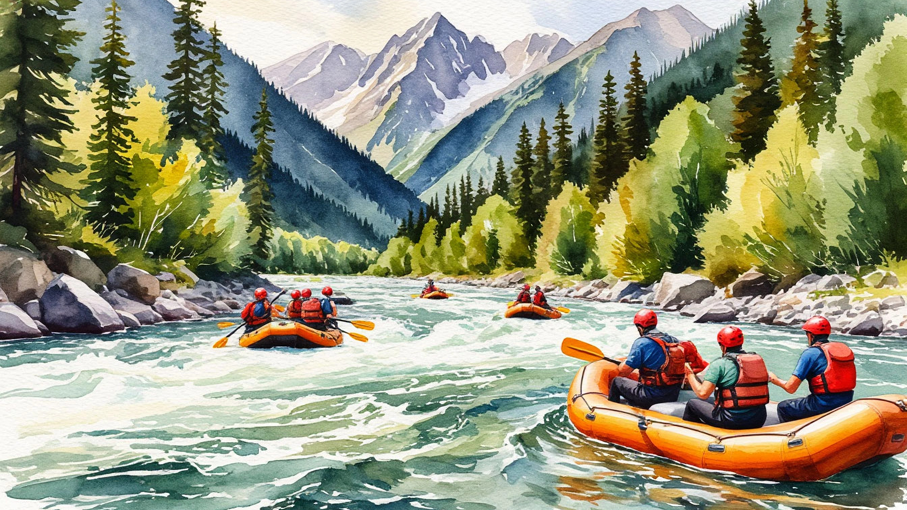

Карелия на релаксе

Даты тура: 20 - 25 июня | 25 - 30 июля | 15 - 20 августа
Стоимость тура:
- 35 700 р. - взрослый
- 35 400 р. - пенсионеры/студенты/школьники
- 45 700 р./чел - одноместное размещение
По программе:
- - Обзорная экскурсия по Петрозаводску
- - Мастер-класс КАЛИТКА (национальный пирожок) + чаепитие с изделиями собственного производства
- - Сплав на рафтах по реке Шуя / пикник /дегустация национальных напитков / водная прогулка по Онежскому озеру (за доп.плату)
- - Посещение природного парка «Белая гора. Тивдийский мрамор»
- - Посещение водопада «Кивач»
- - Посещение о. Кижи (наружный осмотр всех памятников острова)
Программа тура:
1 день: Отправление
- 18-00- выезд из Костромы от ТРЦ "РИО"
2 день: Петрозаводск
- Прибытие в Петрозаводск. Встреча с гидом.
- Завтрак.
- Обзорная экскурсия по столице Карелии - городу Петрозаводску. Посетим Губернаторский парк, собор Александра Невского и сделаем памятные фото на старинных площадях города. Совершим променад по Онежской набережной. Это единственный в мире музей современной авангардной скульптуры под открытым небом. Здесь мы увидим кусочек звездного неба Нойбранденбурга, прошепчем заветную мечту в УХО - Дерева Желаний и сфотографируемся у памятника основателю Петрозаводска - Петру I.
- Переезд в Кондопожский район д.Ватнаволок на базу отдыха.
- Заселение в номера.
- Обед.
- Свободное время.
3 день: Мастер-класс + отдых
- Завтрак.
- Мастер-класс КАЛИТКА (национальный пирожок) + чаепитие с изделиями собственного производства– 45 мин.
- Отдых на базе.
- Свободное время
- ИЛИ
- за доп. плату по желанию (СТРОГО ПРИ БРОНИРОВАНИИ ТУРА):
- - Сплав на рафтах по реке Шуя+пикник: взрослый - 3250 руб./чел., детский 3000 руб./чел.
- - Пикник + дегустация национальных напитков: взрослый - 2150 руб./чел., детский 1620 руб./чел.
- Водная прогулка по Онежскому озеру из г. Кондопога с осмотром форелевого хозяйства и пикником и дегустацией карельских настоек (для взрослых. Детям - морс): взрослый - 3300 руб./чел., детский 2900 руб./чел.
- Ограничений по возрасту нет, дети от 12 лет могут участвовать в сплаве без сопровождения родителей. Опытные инструктора проведут инструктаж по технике безопасности, научат правильно застегивать спасжилет и каску. Покажут технику управления рафтом и раскроют секрет магического слова «табань». Пройдем вместе с ними по реке Шуя и устроим покатушки на пороге Большой Толь.
- Для выезжающих на пикник:
- Отдых в сосновом бору, прогулки по лесу, купание в реке, сбор ягод и грибов (по сезону).
- Комплимент от фирмы - туристическая баня (2 двухсекционных палатки с печкой (мужская и женская) - держат температуру русской бани
- Общий пикник у костра.В меню: карельская уха из форели, греча с тушенкой, салат из свежих овощей, горячий чай с лимоном и печеньем. И, конечно же «победные» 150 г карельских алкогольных напитков для взрослых.
- Возвращение на базу отдыха (те, кто брал доп.услуги).
4 день: Кивач
- Завтрак
- За природными загадками выезжаем на экскурсионную программу:
- Сегодня Вас ждет НОВИНКА маршрута: природный парк «Белая гора. Тивдийский мрамор».
- Мрамор, добываемый на Белой Горе, уникален по расцветке и прочности. Его использовали для отделки самых красивых зданий и дворцов Петербурга — Исаакиевского собора, Зимнего, Мраморного, Михайловского и Мариинского дворцов, Инженерного замка, Казанского собора.
- Посещение вулкана Гирвас - уникальный геологический объект, самый древний (около 2 млрд. лет) кратер в Карелии. Вашему взору откроется вид на разрез более 20 потоков лавы и окаменевшие вулканические «бомбы», включающие в себя газовые пустоты. Не забудьте видеокамеру - вы побывали на настоящем вулкане в Карелии!
- Обед.
- Посещение природного заповедника и водопада «Кивач». «Алмазна сыплется гора с уступа четырьмя скалами...» - восхищенно писал о нем Гаврила Романович Державин, первый поэт-лирик России... Приятным дополнением к бушующей водной стихии будет роща карельской березы, ставшая украшением дендрария заповедника. Это дерево-загадка с изумительной древесиной мраморного рисунка. Даже в XXI веке среди ученых ведутся споры по вопросу о его происхождении. Полюбоваться на сувениры из «карелки» - можно в Музее Природы.
- Возвращение на базу отдыха.
5 день: Кижи
- Освобождение номеров.
- Выезд в былинный край Заонежье - откуда попадаем на сказочный о.Кижи. (стоимость экскурсии на Кижи включена в стоимость тура!)
- Наружный осмотр всех памятников острова, осмотр интерьеров (церковь Покрова Пресвятой Богородицы, одного из крестьянских домов).
- По Онежскому озеру мы переправимся на знаменитый остров Кижи.
- Кижи – еще одна настоящая жемчужина Карелии! Здесь, в уникальном музее-заповеднике под открытым небом собраны памятники архитектуры, иконописи и предметы быта, которые создавались в карельских, вепсских и русских деревнях на протяжении столетий. Этот национальный парк включает в себя не только удивительную по красоте природу русского Севера, но и памятники архитектуры северного края (избы, церкви, хозяйственные постройки).
- Здесь можно найти разнообразные предметы этнографии, живописи, старопечатные и рукописные книги, чертежи и фотографии.
- Основателям этнографического музея удалось восстановить жизнь и крестьянский быт жителей Севера. Мы сможем буквально окунуться в атмосферу давно ушедшей эпохи. На острове снуют по своим ремесленным делам мастера забытых профессий в национальных карельских одеяниях. А вот умельцы с удовольствием и интересом делятся с туристами секретами своего мастерства, демонстрируют приемы плотницкого и ткацкого ремесла. На ваших глазах изготавливают сувениры, вырезанные из дерева, вышитые и сплетенные из бисера.
- Обед.
- Отправление домой.
6 день:
Прибытие в Кострому (ориентировочно после обеда)
В стоимость тура входит:
- - проживание на базе отдыха*
- * База отдыха"Карелия" 3* (Номер реестровой записи: С102024017408)
- - питание по программе
- - услуги гида-экскурсовода
- - экскурсионная программа
- - автобусное обслуживание по программе тура
- - мастер-классы
- - Сплав на рафтах по реке Шуя+пикник: взрослый - 3250 руб./чел., детский 3000 руб./чел.
- - Пикник + дегустация национальных напитков: взрослый - 2150 руб./чел., детский 1620 руб./чел.
- - Водная прогулка по Онежскому озеру из г. Кондопога с осмотром форелевого хозяйства и пикником и дегустацией карельских настоек (для взрослых. Детям - морс): взрослый - 3300 руб./чел., детский 2900 руб./чел.
- Просьба взять с собой наличные денежные средства на случай посещения платного санузла. Точная его стоимость будет известна только на момент его посещения.
Дополнительно оплачиваются (по желанию):
- Для бронирования необходимы данные паспорта РФ и свидетельства о рождении, если с вами путешествуют дети
- Предоплата – 50% от стоимости тура. Остаток за 30 дней до даты выезда.
- Любой тур можно оформить не выходя из дома. Подробнее: Тут
Стоимость тура не зафиксированы и могут быть изменены в большую или меньшую сторону в зависимости от уровня спроса в любой момент.
Время начала экскурсий и их порядок указано ориентировочно.
Фирма-исполнитель оставляет за собой право замены экскурсий без уменьшения общего объема экскурсионной программы.
По вопросам бронирования обращайтесь: